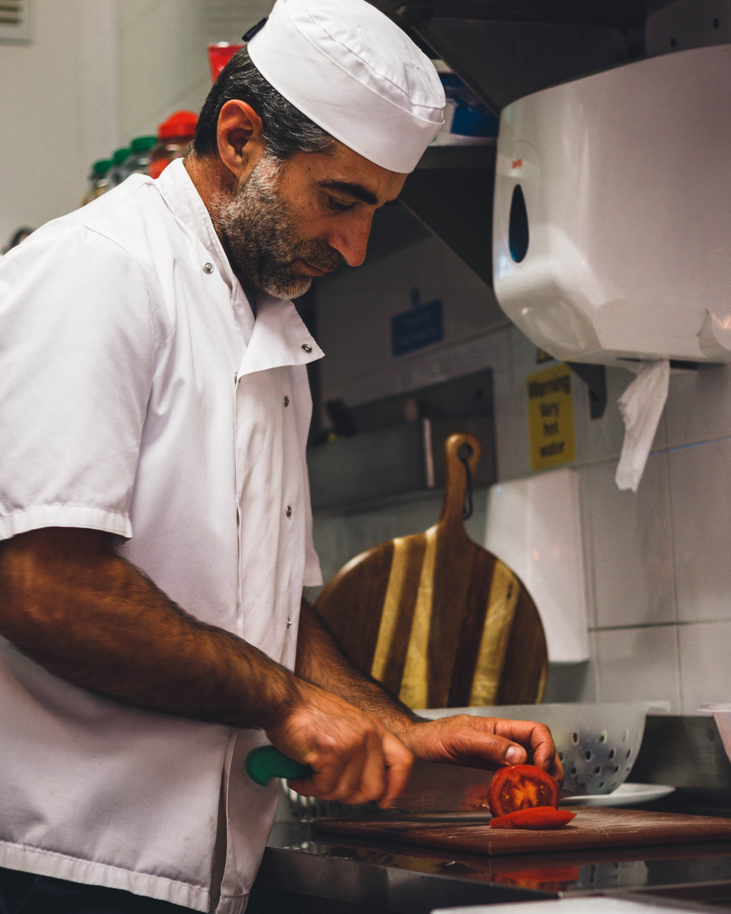
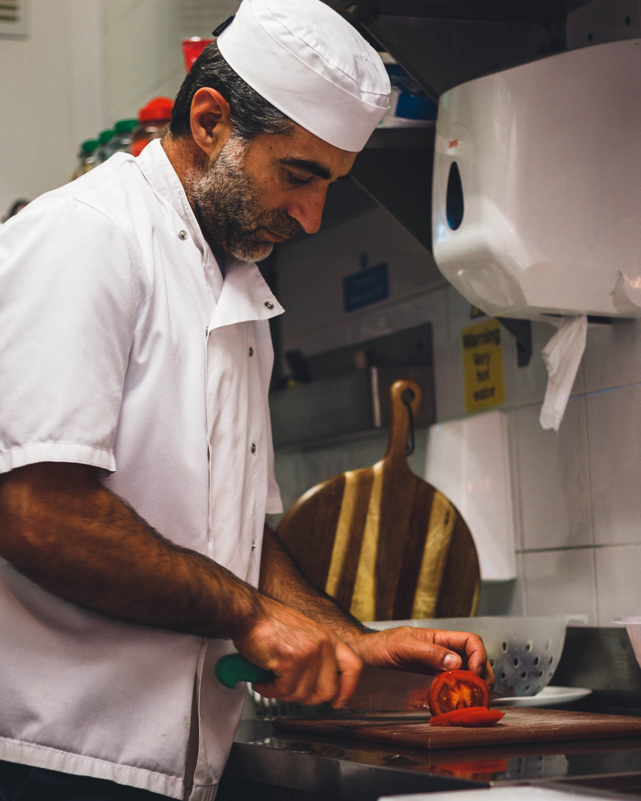

Welcome to Gustosa. We are an Italian-based diner located in Grafton Street. We serve the finest Italian cuisine Dublin has to offer, and cook all our meals to a high standard just like our chefs back in Italy. Originally the Gustosa restaurant chain began in Naples in 1949 and it was such a success that we decided to go worldwide. We really hope you enjoy our food.
 
